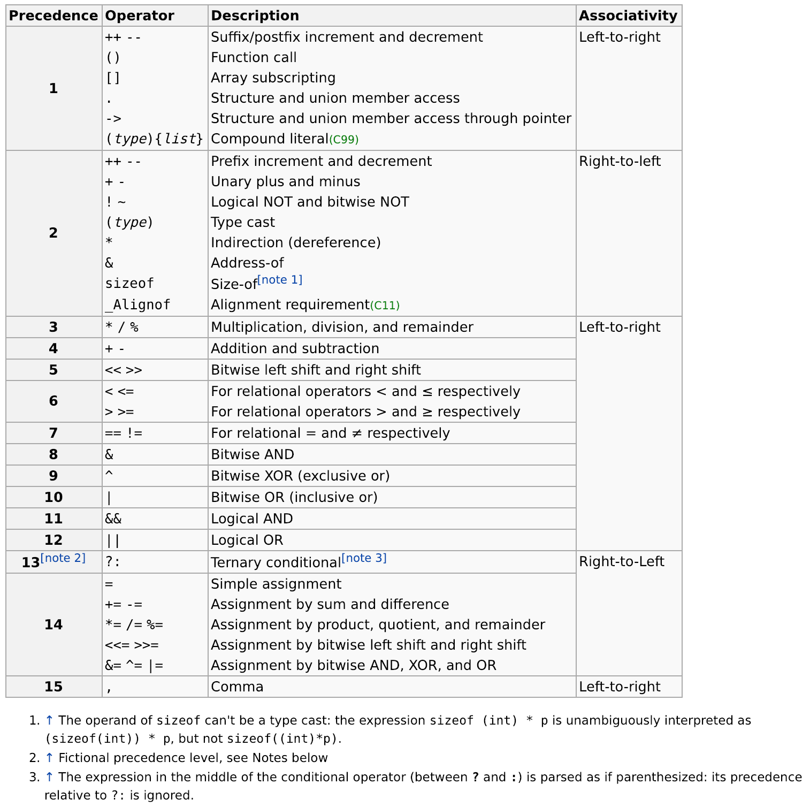

class: center, middle # INFO 450 Spring 2020 --- # Week 2 - Jan 23, 2020 --- # Homework Review * Create a public github repository * Name it: <i>initials</i>_info_450_spring_2020 * Make a top level directory called `chapter2` * Make one program for each example in the book. * program1.cpp, program2.cpp, program3.cpp, program4.cpp Program 4 ends with: ```c++ cout << "Liters: " << liters << "\n"; ``` --- # C++ Binary Arithmetic Operators C++ provides five simple arithmetic binary operators for creating arithmetic expressions: * addition (+) * subtraction (-) * multiplication (*) * division (/) * modulus (%) ## Example ```c++ int a = 10; int b = 12; int c, d, e; c = a + b; d = c / 2; e = d%5; cout << ; cout << d; ``` Note: The modulus operator, which gives the remainder of integer division can only be used with integers. --- # Operators - Precedence and Associativity * The order in which operators are evaluated in a compound expression is called operator precedence; ```c++ int a = 1; int b = 2; int c = 3; int d; d = a + b * c; ``` * If two operators with the same precedence level are adjacent to each other in an expression, the associativity rules tell the compiler whether to evaluate the operators from let to right or from right to left. * Typical precedence levels, highest to lowest * Parentheses () * Unary Operators: +, -, ++, --, ! * Binary arithmetic operators: *, /, % * Binary Arithmetic Operators: +, - --- --- # Operators - Precedence and Associativity (#1) ```c++ int a; a = 3 + 4 * 1 / 5 - 2; cout << a << endl; ``` --- --- # Operators - Precedence and Associativity (#2) ```c++ int a; a = 3 + 4 * 1 / 5 - 2; cout << a << endl; a = (3+4) * 1 / (5 - 2) cout << a << endl; ``` --- # Operators - Precedence and Associativity (#3) ```c++ int a; a = 3 + 4 * 1 / 5 - 2; cout << a << endl; a = (3+4) * 1 / (5 - 2) cout << a << endl; a = 4 * 5 - 2 % 4 / 7 + 5; cout << a << endl; ``` --- # Operators - Precedence and Associativity (#4) ```c++ int a; a = 3 + 4 * 1 / 5 - 2; cout << a << endl; a = (3+4) * 1 / (5 - 2) cout << a << endl; a = 4 * 5 - 2 % 4 / 7 + 5; cout << a << endl; a = 4 * ( 5 - 1 ) % 4 / ( 7 + 5 ) cout << a << endl; ``` --- # Operators - Precedence and Associativity  source: https://en.cppreference.com/w/c/language/operator_precedence --- # Unary Operators - Increment and Decrement * The prefix (before) and postfix (after) increment (++) and decrement (--) operators are examples of unary operators * Unary operators are those that require only one operand such as a <i>num</i> in the expreesion <i>++num</i> * When an expression includes a prefix operators, the mathematical operation takes place BEFORE the expression is evaluated. * When an expression includes a postfix operator, the mathetmatical operation takes place AFTER the expression is evaluated. --- # Shortcut Arithmetic Operators - increment & decrement Example: ```c++ int x = 5; int y = 2; int z = 6; z = ++y; cout << "x = " << x << " y = " << y << " z == " << z << endl; z = x++; cout << "x = " << x << " y = " << y << " z == " << z << endl; z = x++ - ++y; cout << "x = " << x << " y = " << y << " z == " << z << endl; endl; ``` --- # Shortcut Arithmetic Operators - increment & decrement <i>Note:</i> The difference between the results produced by the prefix and the postfix operators can be subtle, but the outcome of a program can vary greatly depending on which incremement operator you use in an expression. --- # C++ Binary Arithmetic Operators & Casting ```c++ int a = 5; int b = 19; int iResult = b / a; cout << iResult << endl; double dResult = b / a; // implicit Cast cout << dResult << endl; dResults = (double) b / a; //explicit Cast cout << dResult << endl; iResult = dResult; // implicit cast cout << iResult << endl; ``` --- # C++ Binary Arithmetic Operators & Casting (answers) ```c++ int a = 5; int b = 19; int iResult = b / a; // The expression a / b has an integer result because both a and b are integers, not because their sum is stored in the iResult variable cout << iResult << endl; double dResult = b / a; // implicit Cast // The expression a/b would still have an integer value, but the value would be implicitly case, or transformed, into a double when the sum is assigned to dResult cout << dResult << endl; dResults = (double) b / a; //explicit Cast // The expression here would have a double value because it is explicity cast into a double and the double is assigned to the dResult cout << dResult << endl; iResult = dResult; // implicit cast // The double value stored in dResult will get implicitly cast into an int and all precision dropped in the process cout << iResult << endl; ``` --- # Shortcut Arithmetic Operators - compound assignment * C++ employs several shortcut operators * When you add two variable values and store the result in a third variable, the expression takes the form of: ```c++ result = firstValue + secondValue ``` * When you use an expression like this, both firstValue and secondValue retain their original value; only the result is altered * When you want to increate a value, the expression takes the form of: ```c++ firstValue = firstValue + secondValue; ``` --- # Shortcut Arithmetic Operators - compound assignment * C++ provides the following to simplify: * += operator for adding one value to another * -= operator for subtracting one value from another * *= operator for multiplying one value by another * /= operator for dividing one value by another --- # Shortcut Arithmetic Operators - compount assignment ```c++ int a = 5; int b = 10; int c = 2; a += 5; b -= c + a; c *= a + b * 3; cout << " a[" << a << "] b[" << b << "] c[" << c << "]" << endl; ``` --- # Evaluating Boolean expressions * A boolean expression is one that evaluates to true or false * All false relational expressions are evaluated as 0 * Thus, an expression such as <i> 2 > 9</i> has the value of 0; * All true relational expressions are evaluated as 1 * Thus, an expression such as <i> 9 > 2</i> has the value of 1; * All relational operators: * == (equivalent to) * \> (greater than) * \>= (greater than or equal to) * < (less than) * <= (less than or equal to) * != (not equal to) * The unary operator ! means 'not' and essentially reverses the true/false value of an expression * !(3 < 4) // ? * !(4 < 3) // ? --- # The <i>if</i> statement * if (condition) statement; // but CHF doesn't like this * If the execution of more than one statement depends on the selection, then the statements MUST be blocked with curly braces ```c++ int a = 1; int b = 2; if (a < b){ cout << "a is less than b." << endl; cout << "... I wanted a second expression." << endl; }else{ cout << "a is greater than b." << endl; } int grade = 91; char letter_grade = ' '; if (grade > 90){ letter_grade = 'A'; cout << "the grade is " << letter_grade << endl; } ``` --- # if / else if / else ```c++ int grade = 93; char letter_grade = ' '; if ( grade >= 90){ letter_grade = 'A'; } else if ( grade >= 80){ letter_grade = 'B'; } else if ( grade >= 70){ letter_grade = 'C'; } else if ( grade >= 60){ letter_grade = 'D'; } else letter_grade = 'F'; } ``` --- # <i>if</i> statement ```c++ double premium = 500.00; int age = 26; if ( age > 25){ premium *= 1.1; } cout << "What is the premium? : " << premium << endl; int vacation_days = 40; if (vacation_days == 0){ cout << Too bad - no more vacation days for you, so sad." << endl; } else { cout << "Your vacation days remaining: " << vacation_days << endl; } ``` --- # The <i>switch</i> statement When you want to create a different outcome depending on specific values of a variable, you can use a series of <i>if</i> statements or an alternative, the <i>switch</i> statement. ```c++ #include <iostream> using namespace std; int main() { //local variable declaration char grade = 'D'; switch (grade) { case 'A': cout << "Excellent A!" << endl; case 'B': case 'C': cout << "Well done!" << endl; case 'D': cout << "You passed by a hair. Is a D passing?" << endl; case 'F': cout << "Better try again!" default: cout << "Invalid grade." << endl; } } ``` --- # The <i>switch</i> statement, more ```c++ #include <iostream> using namespace std; int main() { //local variable declaration char grade = 'D'; switch (grade) { case 'A': cout << "Excellent A!" << endl; break; case 'B': case 'C': cout << "Well done!" << endl; break; case 'D': cout << "You passed by a hair. Is a D passing?" << endl; break; case 'F': cout << "Better try again!" default: cout << "Invalid grade." << endl; } } ``` --- # Logical AND && and Logical OR || In some programming situations, two or more conditions must be true to initiate an action. <b>Truth Table</b> for logical OR ( \|\| ) | Value 1 | Value 2 | Value 1 OR Value 2| |---|---|---| |True|True|True| |True|False|True| |False|True|True| |False|False|False| ```c++ if (true || false) { cout << "You'll always see this." << endl; } ``` --- # Logical AND && Logical OR || <b>Truth Table</b> for logical AND ( && ) | Value 1 | Value 2 | Value 1 OR Value 2| |---|---|---| |True|True|True| |True|False|False| |False|True|False| |False|False|False| ```c++ if (true && false) { cout << "You'll NEVER see this." << endl; } ``` --- # Using Logical AND Use case: Online retailer wants to reward frequent and high spend customers with a special discount. * Using Nested IF statements ```c++ if (num_visits > 5){ if (annual_spend > 10000){ cout << "Discount will apply." << endl; } } ``` * Using IF with logical AND && ```c++ if (num_visits > 5 && annual_spend > 10000 ){ cout << "Discount will apply." << endl; } ``` --- # Using the logical OR Use case: Online retailer provides free delivery if sales amount is > $300 or shipping address is local. * Using IF/Else If statements ```c++ if (sales_amount > 300){ cout << "Free delivery available due to the spend amount." << endl; }else if (area_code == local_code){ cout << "Free delivery since it's local." << endl; } ``` * Using IF with logical OR ```c++ if (sales_amount > 300 || area_code == local_code){ cout << "Free delivery available." << endl; } ``` --- # Example - pulling it all together ## Use Case: Online Retaile - calculate final billing amount ### Functional Requirements: * 2% Discount if total yearly spend is > $10k and visits >= 5 * Shipping fee is $10 unless local area code or sales amount > $30 dollars * Sales Tax is 5% * final sales amount = sales amount - discount + tax + shipping fee * Tax is calculated AFTER discount is applied but before shipping fee is added * Local area code = 23838 * This customer: * Yearly Visits = 5 * Yearly Spend = $9000.75 * Zip Code: 23832 * Sale Amount: $350.00 --- # Solution ```c++ const int LOCAL_AREA = 23838; const double SHIPPING_AMOUNT = 10.0; const double TAX_RATE = 0.05; const double DISCOUNT_RATE = .02; const double MIN_SPEND_AMOUNT = 10000; const int MIN_VISITS = 5; const double MIN_SALE_AMOUNT = 30.0; //this customer int yearly_visits = 5; double yearly_spend = 9000.75; int shipping_area_code = 23832; double sale_amount = 350.0; //place holders double final_sales_amount = 0.0 double discount = 0.0; double tax = 0.0; double shipping = 0.0; ``` --- # Solution (cont) ```c++ if (yearly_spend > MIN_SPEND_AMOUNT && yearly_visits >= MIN_VISITS){ discount = sale_amount * DISCOUNT_RATE; } tax = sale_amount * TAX_RATE; if (sale_amount > MIN_SALE_AMOUNT || shipping_area_code == LOCAL_AREA){ shipping = 0.0; }else{ shipping = SHIPPING_AMOUNT; } sale_amount -= discount; final_sales_amount = sale_amount + shipping + tax; cout << "Your final price is: " << final_sales_amount << endl; // FIND THE BUG! ``` --- # Solution (cont) FIXED ```c++ if (yearly_spend > MIN_SPEND_AMOUNT && yearly_visits >= MIN_VISITS){ discount = sale_amount * DISCOUNT_RATE; } sale_amount -= discount; // HERE IT WAS tax = sale_amount * TAX_RATE; if (sale_amount > MIN_SALE_AMOUNT || shipping_area_code == LOCAL_AREA){ shipping = 0.0; }else{ shipping = SHIPPING_AMOUNT; } // sale_amount -= discount; //THIS SHOULDNT BE HERE final_sales_amount = sale_amount + shipping + tax; cout << "Your final price is: " << final_sales_amount << endl; ``` --- # Looping Statements! A few ways to execute code multiple times. ```c++ int count = 3; if (count == 3){ cout << "1" << endl; cout << "1" << endl; cout << "1" << endl; }else if (count == 2){ cout << "1" << endl; cout << "1" << endl; }else if (count == 1){ cout << "1" << endl; } ``` * for * while * do --- # The <i>for</i> loop for ([initial statement]; condition; [iteration statement]) { body statement; } ```c++ #include <iostream> using namespace std; //program to calculate the sum of the first n integers int main(){ int i = 0; // iterator count int n = 10; // the number of items to count int sum = 0; for (i = 1;i <= n;i++){ sum += i; } cout << "The sum is " << sum << endl; } ``` --- # The <i>while</i> loop while( condition ) { body statement; } ```c++ #include <iostream> using namespace std; //program to calculate the sum of the first n integers int main(){ int i = 0; // iterator count int n = 10; // the number of items to count int sum = 0; while(i <= n){ sum += i; i++; // OR //sum += i++; // !!! } cout << "The sum is " << sum << endl; } ``` --- # The <i>do while</i> loop do { body statement; } while( condition ) ```c++ #include <iostream> using namespace std; //program to calculate the sum of the first n integers int main(){ int i = 0; // iterator count int n = 10; // the number of items to count int sum = 0; do { sum += i++; }while(i <= n) cout << "The sum is " << sum << endl; } ``` <strong>What makes the <i>do while</i> loop different?</strong> --- # Watch out for INFINITE loops! An <i>infinite loop</i> is an instruction sequence that loops endlessly when a valid termination condition has: ## not been set ## cannot occur ## causes the loop to restart before it ends --- # Examples (infinite loops) ```c++ int i = 0; int total = 0; while (i >= 0) { count << "Look, it's " << i << endl; } ``` ```c++ int i = 0; int total = 0; for (i = 0; i < 100; i--) { count << "Look, it's " << i << endl; } ``` ```c++ int i = 0; int total = 0; while (i <= 10); { count << "Look, it's " << i++ << endl; } ``` --- # <i>break</i> and <i>continue</i> The <i>break</i> statement has two uses: * Used inside a switch, it will cause the program to exist the switch statement. * Used inside a loop, it will cause the loop to exit. The <i>continue</i> statement: * is used in a loop and forces execution past the rest of the body of the loop and to re-evaluate the conditionals. --- # The <i>break</i> statement ```c++ #include <iostream> using namespace std; // program to calculate the sum of the first n integers // stopping when it reaches a number that is divisible by 6 int main(){ int i = 0;//iterator int n = 10; int sum = 0; for (i=1;i<=n;i++){ // if (i % 6 == 0) if (!(i % 6)){ break; } sum += 1; } } ``` --- # The <i>continue</i> statement ```c++ #include <iostream> using namespace std; // program to calculate the sum of the first n integers // excluding! any number that is divisible by 6 int main(){ int i = 0;//iterator int n = 10; int sum = 0; for (i=1;i<=n;i++){ // if (i % 6 == 0) if (!(i % 6)){ continue; } sum += 1; } } ``` --- # Reading declaration * In the same way the output class variable <i>cout</i> uses the << operator to write data, the input class variable <i>cin</i> uses the operator >> to read them ```c++ #include <iostream> using namespace std; // program to calculate the sum of the first n integers // excluding! any number that is divisible by 6 int main(){ int value; cout << "Please enter a value: " << endl; cin >> value; cout << "Your value squared is: " << pow(value, 2) << endl; return 0; } ``` Note: 'cin' should be used only for simple input as it does not give very precise control. For example, if your program expects a number and you type <enter>, the program will ignore the whitespace and wait for you to enter a number. --- # Practice! * <i>(practice 1)</i> Write a program that continually accepts positive values from the user, calculates the square of that value and outputs the results to the console. When the user enters '0', execution should stop. * <i>(practice 2)</i> Write a program that continually accepts values from the user, determines if the value is a prime number and prints the result to the console. When the user enters a 0, then execution stops. * <i>(practice 3)</i> Write a program that continually accepts a year value from a user and determines if it is a leap year. * The year can be evenly divided by 4 * If the year can be divided by 100 it is NOT a leap year, unless * The year is also evenly divisible by 400, then it is a leap year. * 2000 and 2400 are leap years * 1800 and 1900 are not leap years --- # github Home work for this week: - Email me the link to your github repo: e.g. https://github.com/chrisfauerbach/chf_info450_spring_2019 * chfauerbach@vcu.edu - By Monday (Jan 28, 2019) night, midnight, have the following in the <i>week2</i> folder of your github repo: * e.g. e.g. https://github.com/chrisfauerbach/chf_info450_spring_2019/week2/ * <i>practice1.cpp</i> - from last slide * <i>practice2.cpp</i> - from last slide * <i>practice3.cpp</i> - from last slide - NEXT WEEK * Functions! * Arrays * Strings * ---